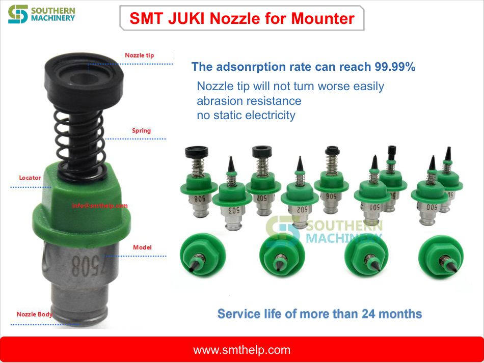
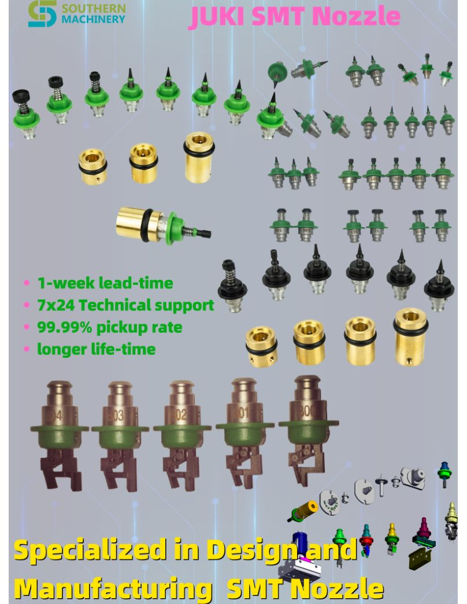
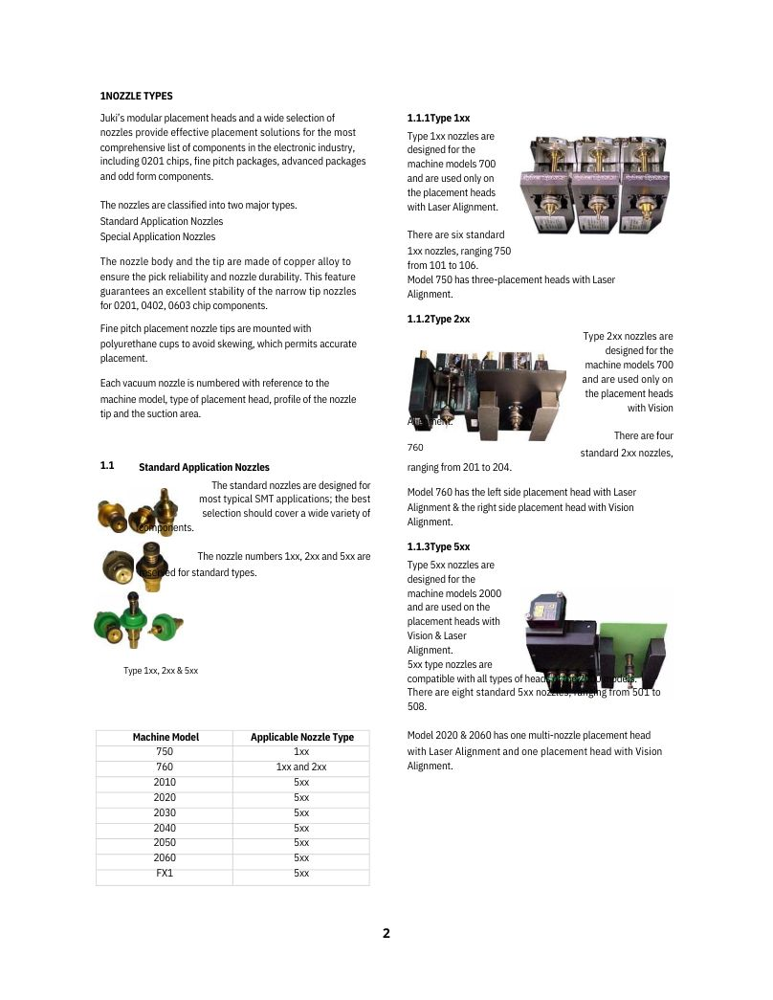
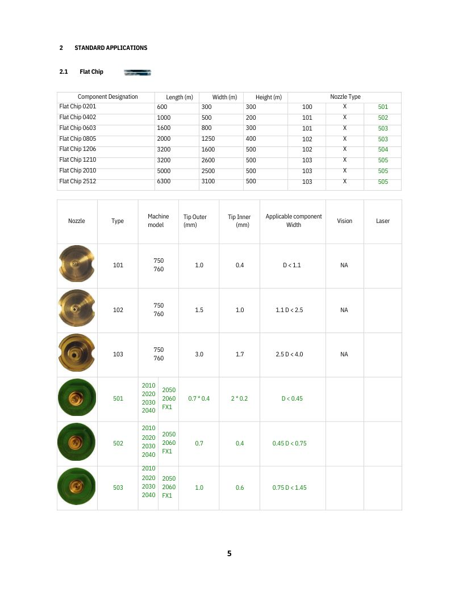
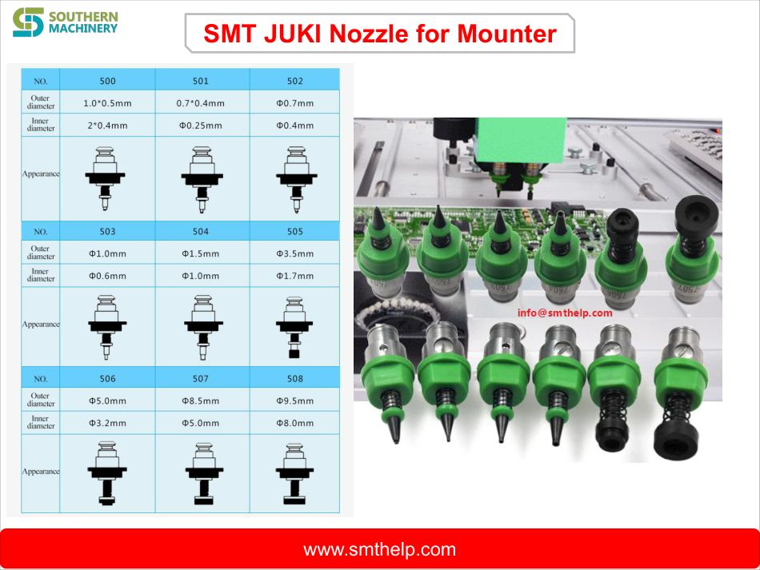
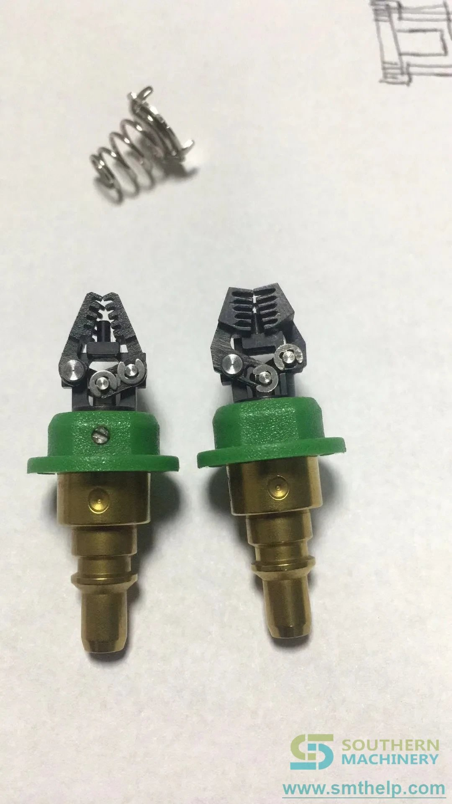
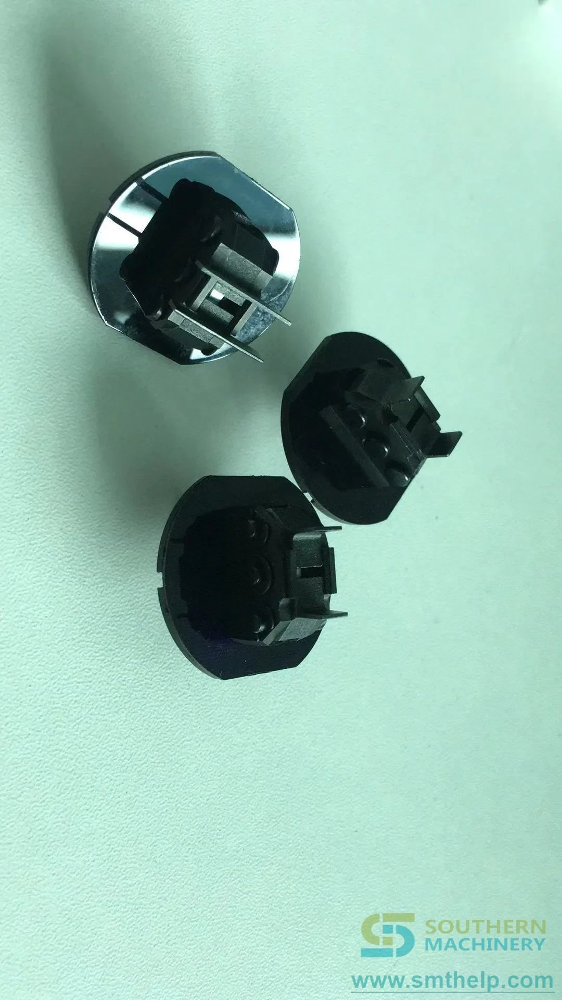

Missed picks on JUKI heads
Worn or poor-quality nozzles cause missed picks that silently drain placement efficiency on KE and RS machines.






SMT nozzle supply · JUKI mounters
JUKI serial nozzles with a 99.99% adsorption-rate design target — 501–505 and MELF series for KE2010–2060, FX1 and RS machines.
99.99% adsorption rate · Tips will not turn worse easily · No static electricity · Reference service life over 24 months.
The hidden cost of worn JUKI nozzles
Every missed pick and every worn tip costs placement time and rework. A professional JUKI serial nozzle changes that math.
Worn or poor-quality nozzles cause missed picks that silently drain placement efficiency on KE and RS machines.
Cheap nozzle tips chip and lose grip quickly — replacement cost and downtime add up.
Nozzles that build static put ESD-sensitive components at risk on every cycle.
Using the wrong serial nozzle for the component type causes mis-picks and rework.
JUKI part numbers vary by machine generation — matching errors stall spares orders.
Special components need custom nozzle geometry that standard serials do not offer.
Feature · Advantage · Benefit
Select a feature to connect the verified capability with its technical advantage and the practical benefit your factory feels.
Picks the part — every cycle.
JUKI serial nozzles designed for a 99.99% component adsorption rate (documented claim).
The head picks reliably, cycle after cycle.
Higher placement efficiency, fewer re-picks.
Adsorption-rate design target for the JUKI serial range.
Reference nozzle service life with abrasion-resistant tips.
Machine generations covered: 750 / 760 / KE2010–2060 / FX1.
Static electricity build-up on engineered nozzle materials.
Source-verified technical data
Values support initial evaluation and remain subject to final technical confirmation against your feeder cart and tape formats.
| Flat chip nozzles | 101 / 102 / 103 and 501 / 502 / 503 / 504 / 505 |
|---|---|
| MELF nozzles | 102 / 510 / 511 |
| Body series | 005 / 105 / 205 / 305 / 405 / 505 / 605 / 705 / 805 / 905 |
| Machine models | 750 / 760 / 2010 / 2020 / 2030 / 2040 / 2050 / 2060 / FX1 and RS-1 |
| Adsorption rate | 99.99% design target |
| Service life | Reference more than 24 months |
| Special nozzles | Odd-form components, special connectors and custom samples |
| Tip durability | Will not turn worse easily; abrasion resistant |
|---|---|
| ESD | No static electricity build-up |
| Customization | Special custom samples available for the serial range |
Catalog data from the Southern Machinery JUKI nozzle catalogue and SMT JUKI Serial Nozzle brochure. Adsorption-rate and service-life values are documented claims of the nozzle program; final part matching is confirmed against your machine model and part number.
Product & catalogue visuals
Click any image to enlarge. Views cover the serial nozzle, catalogue pages, RES-1 serial and custom samples.
Optional online media
Videos load only after you select them, keeping this page lightweight. All clips are from the official Southern Machinery YouTube channel.
How the SMT nozzle picks and places components.
What an SMT gripper nozzle does in PCB assembly.

Gripper nozzles for through-hole PCB assembly.
Manufacturing custom SMT pick-and-place nozzles.
You are offline. The product presentation remains available; videos can be loaded when a connection is restored.
From part review to delivery
We confirm the serial match and custom design before you commit.
Share your JUKI machine models and nozzle part numbers.
Serial selection and custom design confirmed within 24 hours.
Serial, MELF or custom sample matched to your components.
Nozzles delivered with fit verification guidance for your heads.
Spares, cleaning and rapid technical follow-up.
Technical evaluation FAQ
The catalogue maps nozzle types to machine models including 750, 760, KE2010, KE2020, KE2030, KE2040, KE2050, KE2060, FX1 and RS-1 machines.
Flat chip nozzles 101 / 102 / 103 and 501–505, MELF nozzles 102 / 510 / 511, and the 005–905 body series — with special nozzles for odd-form components and connectors.
The JUKI serial nozzle range targets a 99.99% component adsorption rate, reducing missed picks at the head.
The reference service life is more than 24 months, with abrasion-resistant tips that will not turn worse easily.
Yes — the nozzle materials are engineered to avoid static electricity build-up, protecting ESD-sensitive components.
Email info@smthelp.com or WhatsApp +86 136 0256 2576 with your machine models, part numbers and quantity. Quotation and delivery schedule are provided after technical confirmation — typically the same working day.
Next step
Tell us which JUKI machines run your line and the serial nozzles you need. We reply with a matching list, quotation and delivery schedule.